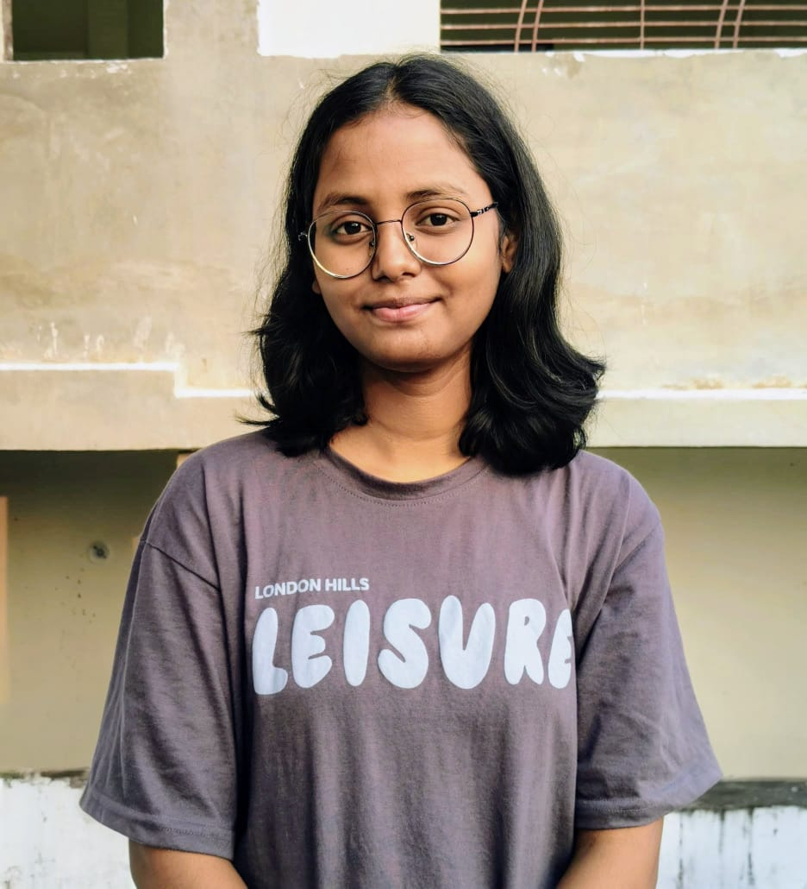
This image holds a quiet rhythm -natural light resting gently on her features, a calm expression shaped by ease rather than performance. The simplicity of her presence, framed by muted tones and stillness, allows the moment to breathe, revealing an unspoken depth that feels both grounded and quietly luminous.
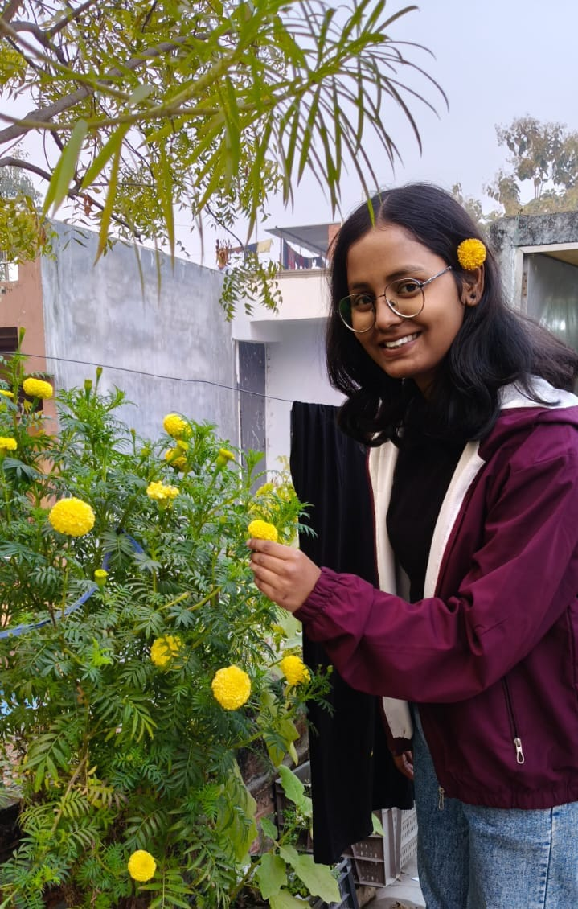
Moonie and her love towards flowers : A Never Ending Love Story captures a quiet pause, where her presence blends naturally with the surrounding greenery. The soft smile, unhurried gesture, and natural light create a moment that feels calm and unspoken, existing without intention yet holding quiet meaning. Ummm Sunflower suits more to her maybe😄
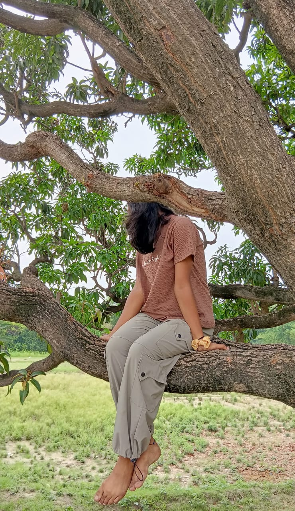
Moonie appears at ease within nature, resting quietly among branches and open space. The relaxed posture and unguarded stillness suggest comfort and freedom, as if the moment belongs entirely to her, shaped by silence, balance, and a gentle sense of belonging.
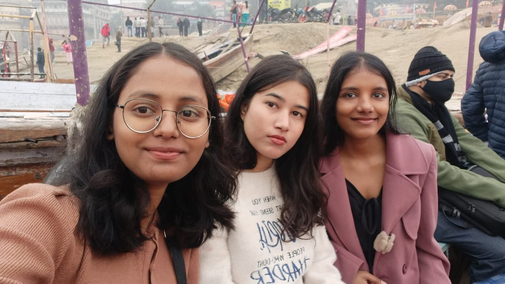
With her two childhood friends, she feels a quiet sense of joy and comfort. Whenever she returns home, meeting them in Banaras becomes a familiar ritual, filled with ease, shared memories, and unspoken connection.
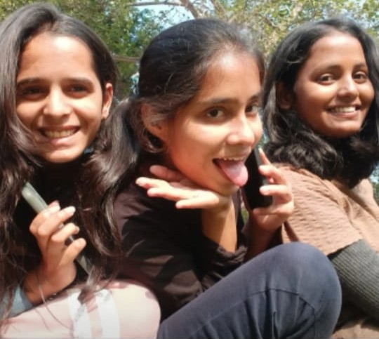
With her new college friends, the trio shares a lively and expressive bond, each carrying a distinct personality. Together they create a dynamic presence, yet one among them stands out with a quiet confidence and warmth that feels uniquely memorable within the frame on the right🌻
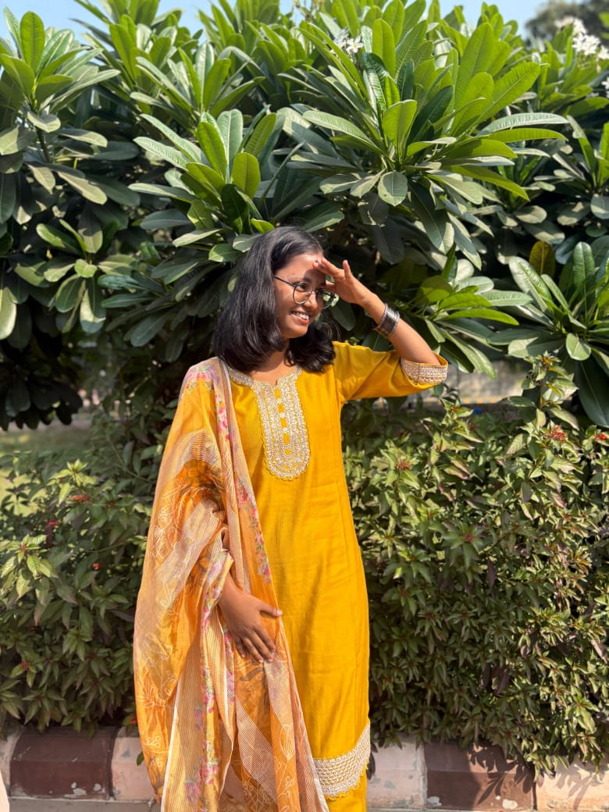
Moonie is Dressed in her favorite flower hues, she stands warmly beneath the sun, light settling naturally around her presence. The colors, posture, and quiet confidence come together effortlessly, creating a moment that feels bright, composed, and gently unforgettable.
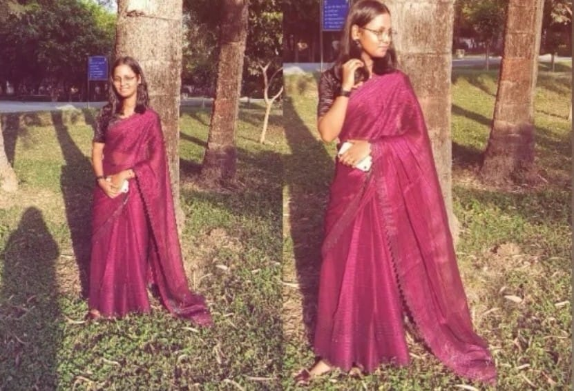
On the day of the freshers celebration, her elegance appeared effortlessly in a public moment for the first time. Surrounded by fun and shared laughter, she carried a quiet grace-noticed by many, yet leaving a distinct impression on someone who saw something more in it🌟
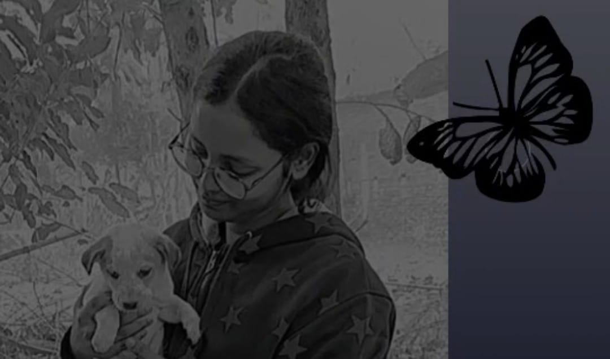
Moonie and her love for dogs reveals itself in quiet, instinctive moments like this. The gentle care and calm connection feel so genuine that one could imagine an entire Netflix series unfolding from this single, heartfelt characteristic alone😁
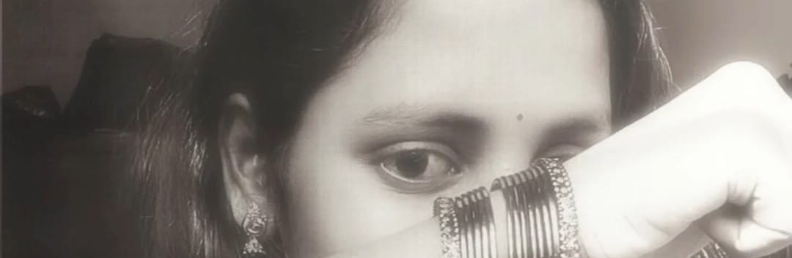
This final image lives in her eyes-the first thing to be noticed, and often the last thing it understands. They reflect quiet struggles, moments of strength, and emotions carried without display. Yet within them rests hope, softness, and the promise of happier days ahead. Words feels less, but There's something Special in her Eyes. Some Stories are not meant to be spoken; they are meant to be seen and felt.
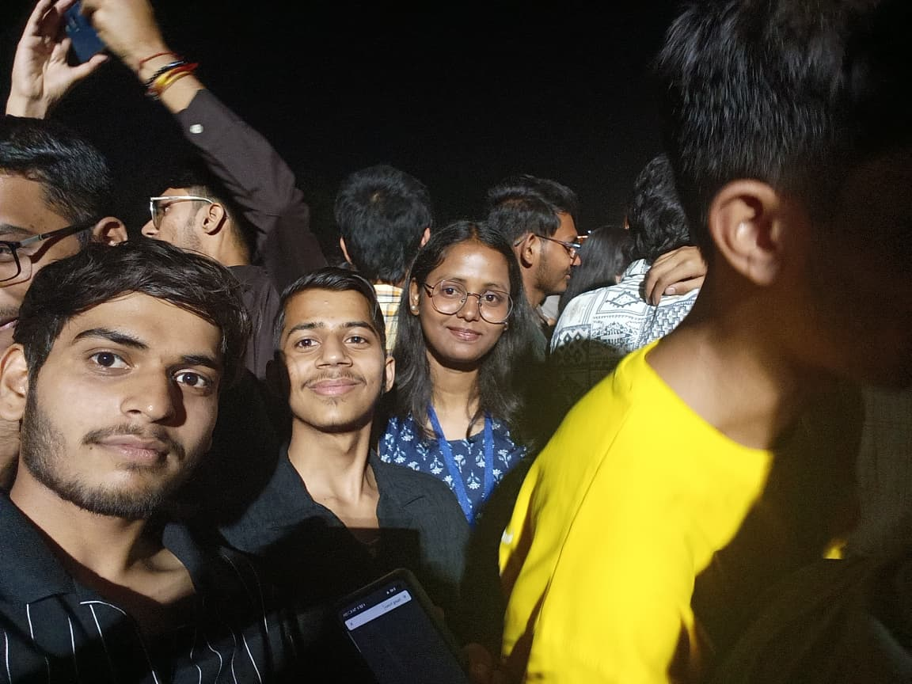
A moment captured after our presentation at the IIT Roorkee concert standing together as a team, celebrating both our work and our bond. I'm in the center as the team lead, with Prakhar on the left - my co-founder and constant vibe matcher and Miss Muskan on the right, whose presence makes every memory brighter as shown in her name : "Muskan". More than just a picture, it's a snapshot of friendship, hustle, and shared energy under the night lights.
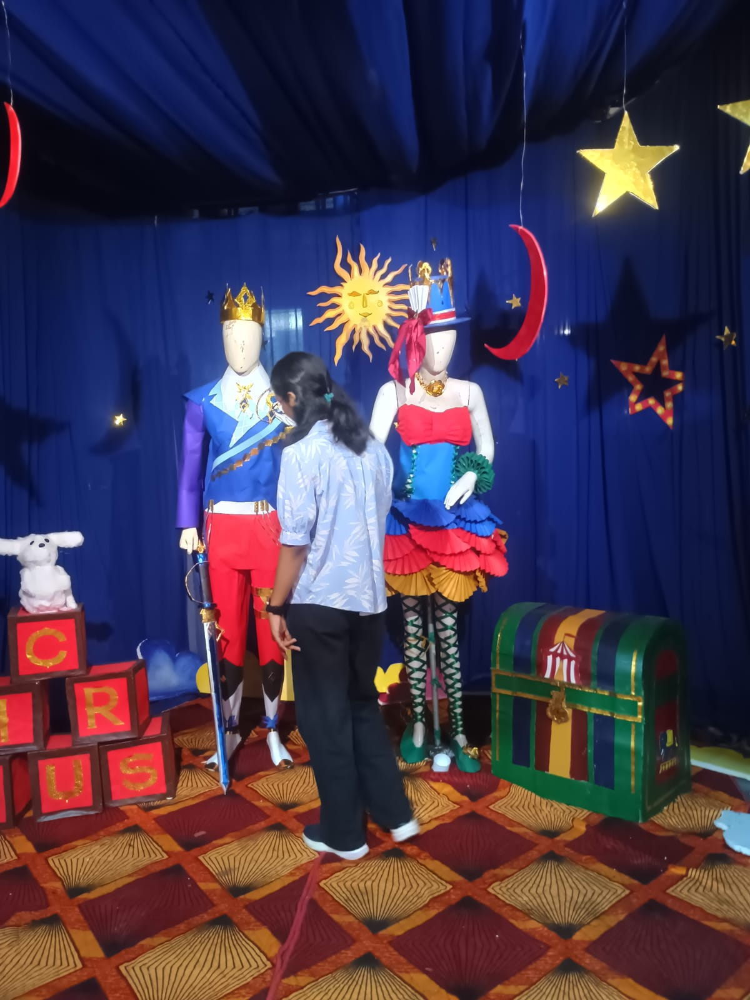
A quiet moment at the cultural exhibition in the IIT Roorkee Sports Complex - lost in colors, stories, and creativity. While she admired the art, I captured this candid from afar, like a silent observer preserving a beautiful pause in time. Sometimes, the most genuine expressions are the ones never posed.
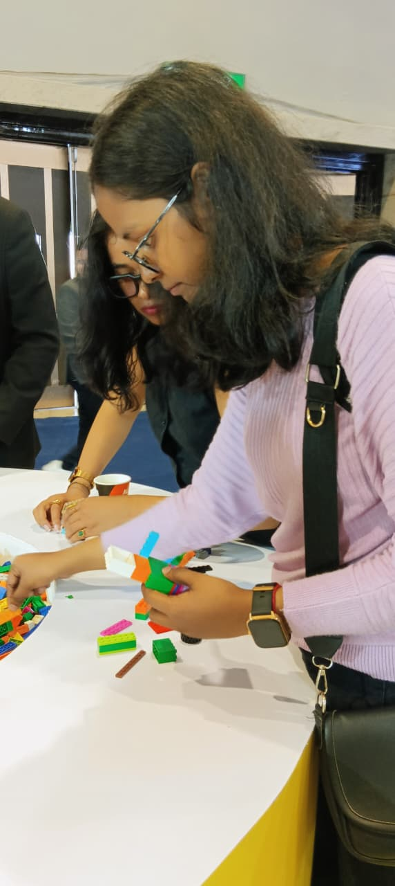
At the AI Impact Summit in Delhi, she stepped in solo - representing not just herself, but the spirit of our team. Immersed in creativity, she turned simple pieces into something meaningful, reflecting curiosity, independence, and her drive to explore beyond boundaries. Even without the team around, her passion spoke for all of us.
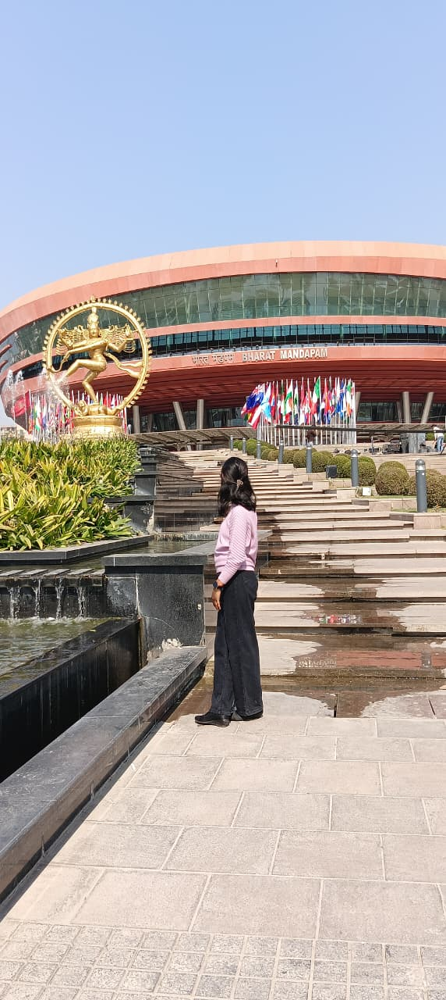
A very Special pose outside the venue , I call it - "Face Chupauu Pose 😅", There her ambition meets inspiration. Standing in front of a place that brings together ideas from around the world, she reflects the same spirit, curious, confident, and ready to grow. Sometimes or most of the time, she understands things very well, Teasing her is just my hobby😅 especially for her apart from it she has potential to achieve many good things in future.
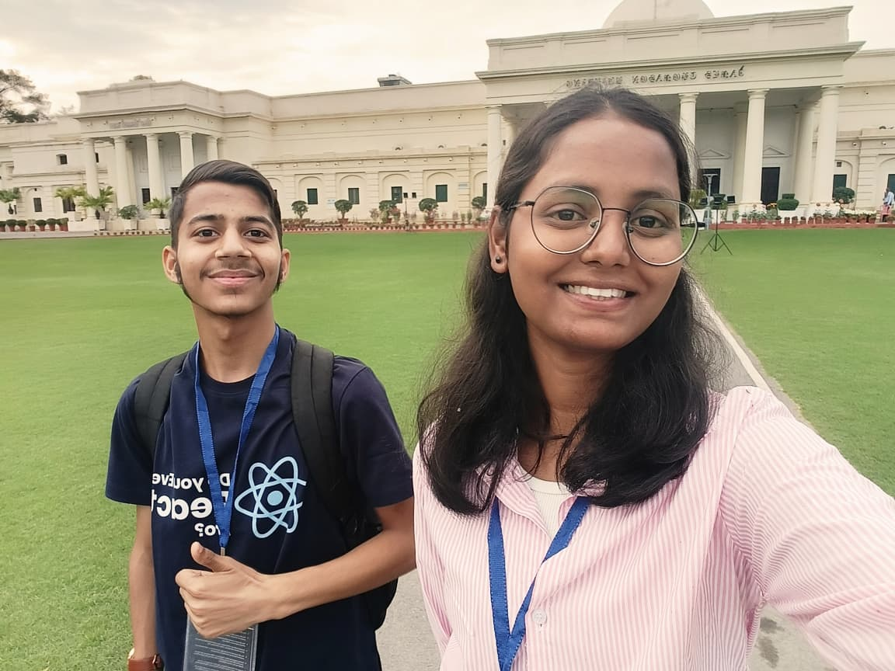
Moonie & Verse at IIT Roorkee😁 A picture that holds more than just smiles - it holds an unexpected friendship I'll always cherish. From presentation prep to endless conversations and networking, these days shaped not just our journey, but also helped me understand myself better. She's my listener, my solver… and sometimes a complete "kaddu"😉. Some bonds aren't planned, but they turn out to be the most special ones. And this one, I'm never forgetting.